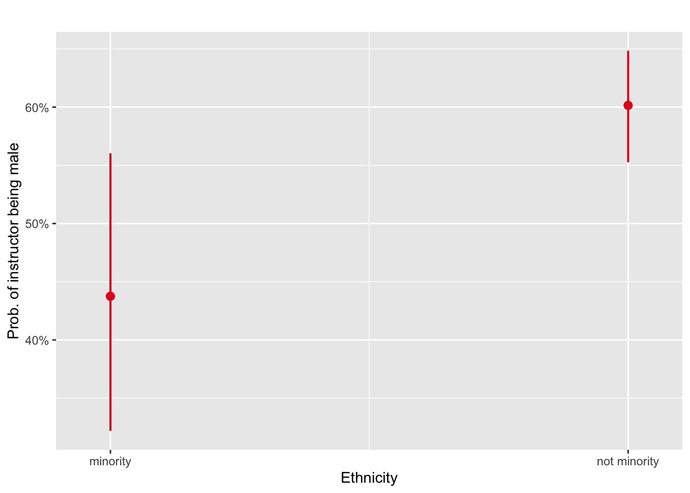

Week 7: Generalised Linear Models
1 Introduction
In Weeks 3 and 4 we looked at modelling data using linear regression models were we had:
- a continuous response variable \(y\) and
- one or more explanatory variables \(x_1, x_2,\ldots, x_p\), which were numerical/categorical variables.
Recall that for data \((y_i, x_i), ~ i = 1,\ldots, n\), where \(y\) is a continuous response variable, we can write a simple linear regression model as follows:
\[y_i = \alpha + \beta x_i + \epsilon_i, ~~~~ \epsilon_i \sim N(0, \sigma^2),\] where
- \(y_i\) is the \(i^{th}\) observation of the continuous response variable;
- \(\alpha\) is the intercept of the regression line;
- \(\beta\) is the slope of the regression line;
- \(x_i\) is the \(i^{th}\) observation of the explanatory variable; and
- \(\epsilon_i\) is the \(i^{th}\) random component.
Thus, the full probability model for \(y_i\) given \(x_i\) (\(y_i | x_i\)) can be written as
\[y_i | x_i \sim N(\alpha + \beta x_i, \sigma^2),\]
where the mean \(\alpha + \beta x_i\) is given by the deterministic part of the model and the variance \(\sigma^2\) by the random part. Hence we make the assumption that the outcomes \(y_i\) are normally distributed with mean \(\alpha + \beta x_i\) and variance \(\sigma^2\). However, what if our response variable \(y\) is not a continuous random variable?
1.1 Generalised linear models
The main objective this week is to introduce Generalised Linear Models (GLMs), which extend the linear model framework to response variables that don’t follow the normal distribution. GLMs can be used to model non-normal continuous response variables, but they are most frequently used to model binary, categorical or count data. Here we shall focus on binary/categorical response variables. The generalised linear model can be written as:
\[\begin{align} y_i &\sim f(g(\boldsymbol{\mu}_i)) \nonumber \\ \boldsymbol{\mu}_i &= \mathbf{x}_i^\top \boldsymbol{\beta}, \nonumber \end{align}\]where the response \(y_i\) is predicted through the linear combination \(\boldsymbol{\mu}_i\) of explanatory variables by the link function \(g(\cdot)\), assuming some distribution \(f(\cdot)\) for \(y_i\), and \(\mathbf{x}_i^\top\) is the \(i^{th}\) row of the design matrix \(\boldsymbol{X}\). For example, the simple linear regression model above for a continuous response variable has the normal distribution distribution as \(f(\cdot)\), with corresponding link function equal to the Identity function, that is, \(g(\boldsymbol{\mu}_i) = \boldsymbol{\mu}_i\).
What if our response variable \(y\) is binary (e.g. yes/no, success/failure, alive/dead)? That is, the independent responses \(y_i\) can either be:
binary, taking the value 1 (say success, with probability \(p_i\)) or 0 (failure, with probability \(1-p_i\)) or
binomial, where \(y_i\) is the number of successes in a given number of trials \(n_i\), with the probability of success being \(p_i\) and the probability of failure being \(1-p_i\).
In both cases the distribution of \(y_i\) is assumed to be binomial, but in the first case it is Bin\((1,p_i)\) and in the second case it is Bin\((n_i,p_i)\). Hence, a binary response variable \(y_i\) has a binomial distribution with corresponding link function \(g(\cdot)\) equal to the logit link function, that is
\[g(p_i) = \log \left(\frac{p_i}{1 - p_i} \right),\] which is also referred to as the log-odds (since \(p_i ~ / ~ 1-p_i\) is an odds ratio). Why is such a transformation required when looking at a binary response variable? Well here we are interested in modelling the probability of success \(p_i\), and as we know probabilities must be between 0 and 1 \(\left(p_i \in [0, 1]\right)\). So if we want to model the probability of success using a linear model we need to ensure that the probabilities obtained are between 0 and 1. However, if we just use the identity link function, such that
\[p_i = \mathbf{x}_i^\top \boldsymbol{\beta},\] we would need to ensure that in some way \(\mathbf{x}_i^\top \boldsymbol{\beta} \in [0, 1]\), that is, the linear combination of the explanatory variables and their corresponding regression coefficients was between 0 and 1. Hence some restrictions of some sort would need to be put in place to ensure this was the case. However, if we use the logit link function, such that
\[\log \left(\frac{p_i}{1 - p_i} \right) = \mathbf{x}_i^\top \boldsymbol{\beta},\]
no restrictions need to be in place on our estimates of the parameter vector \(\boldsymbol{\beta}\), since the inverse of the logit link function will always gives us valid probabilities since
\[p_i = \frac{\exp\left(\mathbf{x}_i^\top \boldsymbol{\beta}\right)}{1 + \exp\left(\mathbf{x}_i^\top \boldsymbol{\beta}\right)} ~~~ \in [0, 1].\] This linear regression model with a binary response variable is referred to as logistic regression. As such, when it comes to looking at binary response variables we shall be looking at odds ratios and probabilities of success/failure. The table below is a reminder of the distribution and link function used for the normal model we have previously looked at as well as the logistic regression model we shall be examining for the rest of this week.
| Model | Random component | Systematic component | Link function |
|---|---|---|---|
| Normal | \(y_i\overset{\text{indep}}\sim \mbox{N}(\mu_i,\sigma^2),\) | \(\boldsymbol{x}_i^\top\boldsymbol{\beta} =\beta_0 + \beta_1x_i + \beta_2x_i + \ldots\) | \(g(\mu_i)=\mu_i\) |
| Logistic | \(y_i\overset{\text{indep}}\sim \mbox{Bin}(1,p_i),\) | \(\boldsymbol{x}_i^\top\boldsymbol{\beta} =\beta_0+ \beta_1x_i + \beta_2x_i + \ldots\) | \(g(\mu_i) = \log \left( \frac{p_i}{1-p_i} \right)\) |
Required R packages
Before we proceed, load all the packages needed for this week:
2 Logistic regression with one numerical explanatory variable
Here we shall begin by fitting a logistic regression model with one numerical explanatory variable. Let’s return to the evals data from the moderndive package that we examined in Week 3.
2.1 Teaching evaluation scores
Student feedback in higher education is extremely important when it comes to the evaluation of teaching techniques, materials, and improvements in teaching methods and technologies. However, there have been studies into potential bias factors when feedback is provided, such as the physical appearance of the teacher; see Economics of Education Review for details. Here, we shall look at a study from student evaluations of \(n=463\) professors from The University of Texas at Austin.
Previously, we looked at teaching score as our continuous response variable and beauty score as our explanatory variable. Now we shall consider gender as our response variable, and hence shall have a binary response variable (female/male). We will examine if there is any difference in gender by age of the teaching instructors within the evals data set.
First, let’s start by selecting the variables of interest from the evals data set:
Code
evals.gender <- evals |>
select(gender, age)# A tibble: 6 × 2
gender age
<fct> <int>
1 female 36
2 female 36
3 female 36
4 female 36
5 male 59
6 male 59Now, let’s look at a boxplot of age by gender to get an initial impression of the data:
Code
ggplot(data = evals.gender, aes(x = gender, y = age, fill = gender)) +
geom_boxplot() +
labs(x = "Gender", y = "Age") +
theme(legend.position = "none")
Here we can see that the age of male teaching instructors tends to be higher than that of their female counterparts. Now, let’s fit a logistic regression model to see whether age is a significant predictor of the odds of a teaching instructor being male or female.
2.2 Log-odds
To fit a logistic regression model we will use the generalised linear model function glm, which acts in a very similar manner to the lm function we have used previously. The logistic regression model with gender as the response and age as the explanatory variable is given by:
Code
model <- logistic_reg() |>
set_engine("glm")
model <- model |>
fit(gender ~ age, data = evals.gender) |>
extract_fit_engine()This model uses the logit link function. Now, let’s take a look at the summary produced from our logistic regression model:
Code
model |>
summary()
Call:
stats::glm(formula = gender ~ age, family = stats::binomial,
data = data)
Coefficients:
Estimate Std. Error z value Pr(>|z|)
(Intercept) -2.69795 0.51194 -5.270 1.36e-07 ***
age 0.06296 0.01059 5.948 2.71e-09 ***
---
Signif. codes: 0 '***' 0.001 '**' 0.01 '*' 0.05 '.' 0.1 ' ' 1
(Dispersion parameter for binomial family taken to be 1)
Null deviance: 630.30 on 462 degrees of freedom
Residual deviance: 591.41 on 461 degrees of freedom
AIC: 595.41
Number of Fisher Scoring iterations: 4Firstly, the baseline category for our binary response is female. This is due to the default baseline in R being taken as the one which comes first alphabetically, which can be seen from the levels function:
Code
levels(evals.gender$gender)[1] "female" "male" This means that estimates from the logistic regression model are for a change on the log-odds scale for males in comparison to the response baseline females. That is
where \(p = \textrm{Prob}\left(\textrm{Male}\right)\) and \(1 - p = \textrm{Prob}\left(\textrm{Female}\right)\). Hence, the log-odds of the instructor being male increase by 0.06 for every one unit increase in age. This provides us with a point estimate of how the log-odds changes with age, however, we are also interested in producing a 95% confidence interval for these log-odds. This can be done as follows:
Code
age.logodds.lower <- (mod.coef.logodds["age", "Estimate"]
- 1.96 * mod.coef.logodds["age", "Std. Error"])[1] 0.04221777Code
age.logodds.upper <- (mod.coef.logodds["age", "Estimate"]
+ 1.96 * mod.coef.logodds["age", "Std. Error"])[1] 0.08371167Hence the point estimate for the log-odds is 0.06, which has a corresponding 95% confidence interval of (0.04, 0.08). This can be displayed graphically using the plot_model function from the sjPlot package by simply passing our model as an argument:
Code
plot_model(model, show.values = TRUE, transform = NULL,
title = "Log-Odds (Male instructor)", show.p = FALSE)
Some of the interesting arguments that can be passed to the plot_model function are:
-
show.values = TRUE/FALSE: Whether the log-odds/odds values should be displayed; -
show.p = TRUE/FALSE: Adds asterisks that indicate the significance level of estimates to the value labels; -
transform: A character vector naming the function that will be applied to the estimates. The default transformation usesexpto display the odds ratios, whiletransform = NULLdisplays the log-odds; and -
vline.color: colour of the vertical “zero effect” line.
Further details on using plot_model can be found here. Now, let’s add the estimates of the log-odds to our data set:
2.3 Odds
Typically we would like to work on the odds scale as it is easier to interpret an odds-ratio as opposed to the log-odds-ratio. To obtain the odds we simply exponentiate the log-odds, that is
\[\begin{align} \frac{p}{1-p} &= \exp\left(\alpha + \beta \cdot \textrm{age} \right), \nonumber \end{align}\]On the odds scale, the value of the intercept (0.07) gives the odds of a teaching instructor being male given their age = 0, which is obviously not a viable age for a teaching instructor, and hence why this value is very close to zero. For age we have an odds of 1.06, which indicates that for every 1 unit increase in age, the odds of the teaching instructor being male increase by a factor of 1.06. So how is this calculated? Let’s look at the odds-ratio obtained from instructors aged 51 and 52 years old, that is, a one unit difference:
For example, the odds of a teaching instructor who is 45 years old being male is given by
\[\begin{align} \frac{p}{1-p} &= \exp\left(\alpha + \beta \cdot \textrm{age}\right) = \exp\left(-2.7 + 0.06 \cdot 45\right) = 1.15. \nonumber \end{align}\]This can be interpreted as the chances of an instructor who is 45 being male are 15% greater than them being female. We can obtain a 95% confidence interval for the odds by simply exponentiating the lower and upper bounds of our log-odds interval:
Code
age.odds.lower <- exp(age.logodds.lower)[1] 1.043122Code
age.odds.upper <- exp(age.logodds.upper)[1] 1.087315Hence the point estimate for the odds is 1.06, which has a corresponding 95% confidence interval of (1.04, 1.09). This can be displayed graphically using the plot_model function from the sjPlot package by simply passing our model as an argument as well as removing transform = NULL (the default transformation is exponential):
Code
plot_model(model, show.values = TRUE,
title = "Odds (Male instructor)", show.p = FALSE, axis.lim = c(1, 1.5))
Note: axis.lim is used to zoom in on the 95% confidence interval. The confint() function can also be used to compute confidence intervals (confint(model) for example).
Now, let’s add the estimates of the odds to our data set:
2.4 Probabilities
We can obtain the probability \(p = \textrm{Prob}(\textrm{Male})\) using the following transformation:
\[\begin{align} p &= \frac{\exp\left(\alpha + \beta \cdot \textrm{age} \right)}{1 + \exp\left(\alpha + \beta \cdot \textrm{age} \right)}. \nonumber \end{align}\]For example, the probability of a teaching instructor who is 52 years old being male is
\[\begin{align} p &= \frac{\exp\left(\alpha + \beta \cdot \textrm{age} \right)}{1 + \exp\left(\alpha + \beta \cdot \textrm{age} \right)} =\frac{\exp\left(-2.697946 + 0.0629647\cdot 52 \right)}{1 + \exp\left(-2.697946 + 0.0629647\cdot 52 \right)} = 0.64, \nonumber \end{align}\]which can be computed in R as follows:
Code
p.num <- (exp(mod.coef.logodds["(Intercept)", "Estimate"]
+ mod.coef.logodds["age", "Estimate"] * 52))
p.denom <- 1 + p.num
p.num / p.denom[1] 0.6401971The plogis() function from the stats library can also be used to obtain probabilities from the log-odds:
Code
plogis(mod.coef.logodds["(Intercept)", "Estimate"]
+ mod.coef.logodds["age", "Estimate"] * 52)[1] 0.6401971Let’s add the probabilities to our data, which is done using the fitted() function:
Note: predict(model, type = "response") will also provide the estimated probabilities.
Finally, we can plot the probability of being male using the geom_smooth() function by giving method = "glm" and methods.args = list(family = "binomial") as follows:
Code
ggplot(data = evals.gender, aes(x = age, y = probs.male)) +
geom_smooth(method = "glm", method.args = list(family = "binomial"), se = FALSE) +
labs(x = "Age", y = "Probability of instructor being male")
The plot_model() function from the sjPlot package can also produce the estimated probabilities by age as follows:
Code
plot_model(model, type = "pred", title = "", terms="age [all]", axis.title = c("Age", "Prob. of instructor being male"))
3 Logistic regression with one categorical explanatory variable
Instead of having a numerical explanatory variable such as age, let’s now use the binary categorical variable ethnicity as our explanatory variable.
Code
evals.ethnic <- evals |>
select(gender, ethnicity)# A tibble: 6 × 2
gender ethnicity
<fct> <fct>
1 female minority
2 female minority
3 female minority
4 female minority
5 male not minority
6 male not minorityNow, let’s look at a barplot of the proportion of males and females by ethnicity to get an initial impression of the data.
Code
evals.ethnic |>
tabyl(ethnicity, gender) |>
adorn_percentages() |>
adorn_pct_formatting() |>
adorn_ns() # To show original counts ethnicity female male
minority 56.2% (36) 43.8% (28)
not minority 39.8% (159) 60.2% (240)Code

We can see that a larger proportion of instructors in the minority ethnic group are female (56.3% vs 43.8%), while the not minority ethnic group is comprised of more male instructors (60.2% vs 39.8%). Now we shall fit a logistic regression model to determine whether the gender of a teaching instructor can be predicted from their ethnicity.
3.1 Log-odds
The logistic regression model is given by:
Code
model.ethnic |>
summary()
Call:
glm(formula = gender ~ ethnicity, family = binomial(link = "logit"),
data = evals.ethnic)
Coefficients:
Estimate Std. Error z value Pr(>|z|)
(Intercept) -0.2513 0.2520 -0.997 0.3186
ethnicitynot minority 0.6630 0.2719 2.438 0.0148 *
---
Signif. codes: 0 '***' 0.001 '**' 0.01 '*' 0.05 '.' 0.1 ' ' 1
(Dispersion parameter for binomial family taken to be 1)
Null deviance: 630.30 on 462 degrees of freedom
Residual deviance: 624.29 on 461 degrees of freedom
AIC: 628.29
Number of Fisher Scoring iterations: 4Again, the baseline category for our binary response is female. Also, the baseline category for our explanatory variable is minority, which, like gender, is done alphabetically by default by R:
Code
levels(evals.ethnic$ethnicity)[1] "minority" "not minority"This means that estimates from the logistic regression model are for a change on the log-odds scale for males (\(p = \textrm{Prob}(\textrm{Males})\)) in comparison to the response baseline females. That is
where \(\mathbb{I}_{\mbox{ethnicity}}(\mbox{not minority})\) is an indicator function. Hence, the log-odds of an instructor being male increase by 0.66 if they are in the ethnicity group not minority. This provides us with a point estimate of how the log-odds changes with ethnicity, however, we are also interested in producing a 95% confidence interval for these log-odds. This can be done as follows:
Code
ethnic.logodds.lower <- (mod.ethnic.coef.logodds["ethnicitynot minority", "Estimate"]
- 1.96 *
mod.ethnic.coef.logodds["ethnicitynot minority", "Std. Error"])[1] 0.1300587Code
ethnic.logodds.upper <- (mod.ethnic.coef.logodds["ethnicitynot minority", "Estimate"]
+ 1.96 *
mod.ethnic.coef.logodds["ethnicitynot minority", "Std. Error"])[1] 1.19604Hence the point estimate for the log-odds is 0.66, which has a corresponding 95% confidence interval of (0.13, 1.2). This can be displayed graphically using the plot_model function from the sjPlot package by simply passing our model as an argument:
Code
plot_model(model.ethnic, show.values = TRUE, transform = NULL,
title = "Log-Odds (Male instructor)", show.p = FALSE)
Now, let’s add the estimates of the log-odds to our data set:
3.2 Odds
On the odds scale the regression coefficients are given by
The (Intercept) gives us the odds of the instructor being male given that they are in the minority ethnic group, that is, 0.78 (the indicator function is zero in that case). The odds of the instructor being male given they are in the not minority ethnic group are 1.94 times greater than the odds if they were in the minority ethnic group.
Before moving on, let’s take a look at how these values are computed. First, the odds of the instructor being male given that they are in the minority ethnic group can be obtained as follows:
Code
# the number of instructors in the minority
pmin <- evals.ethnic |>
filter(ethnicity == "minority") |>
summarize(n()) |>
pull()
# the number of male instructors in the minority
pmin.male <- evals.ethnic |>
filter(ethnicity == "minority", gender == "male") |>
summarize(n()) |>
pull()
# the proportion/probability of males in the minority
prob.min.male <- pmin.male / pmin
odds.min.male <- prob.min.male / (1 - prob.min.male)
odds.min.male[1] 0.7777778Now, the odds-ratio of an instructor being male in the not minority compared to the minority ethnic group is found as follows:
Code
# the number of instructors not in the minority
pnotmin <- evals.ethnic |>
filter(ethnicity == "not minority") |>
summarize(n()) |>
pull()
# the number of male instructors not in the minority
pnotmin.male <- evals.ethnic |>
filter(ethnicity == "not minority", gender == "male") |>
summarize(n()) |>
pull()
# the proportion/probability of males not in the minority
prob.notmin.male <- pnotmin.male / pnotmin
odds.notmin.male <- prob.notmin.male / (1 - prob.notmin.male)
odds.ratio.notmin <- odds.notmin.male / odds.min.male[1] 1.940701We can obtain a 95% confidence interval for the odds by simply exponentiating the lower and upper bounds of the log-odds interval:
Code
ethnic.odds.lower <- exp(ethnic.logodds.lower)[1] 1.138895Code
ethnic.odds.upper <- exp(ethnic.logodds.upper)[1] 3.306994Hence the point estimate for the odds-ratio is 1.94, which has a corresponding 95% confidence interval of (1.14, 3.31). Again, we can display this graphically using the plot_model function from the sjPlot package:
Code
plot_model(model.ethnic, show.values = TRUE,
title = "Odds (Male instructor)", show.p = FALSE)
not minority group.Now, let’s add the estimates of the odds to our data set:
# A tibble: 6 × 4
gender ethnicity logodds.male odds.male
<fct> <fct> <dbl> <dbl>
1 female minority -0.251 0.778
2 female minority -0.251 0.778
3 female minority -0.251 0.778
4 female minority -0.251 0.778
5 male not minority 0.412 1.51
6 male not minority 0.412 1.51 3.3 Probabilities
The probabilities of an instructor being male given they are in the minority and not minority groups are
Code
plogis(mod.ethnic.coef.logodds["(Intercept)", "Estimate"])[1] 0.4375Code
plogis(mod.ethnic.coef.logodds["(Intercept)", "Estimate"] +
mod.ethnic.coef.logodds["ethnicitynot minority", "Estimate"])[1] 0.6015038Hence, the probabilities of an instructor being male given they are in the minority and not minority ethnic groups are 0.437 and 0.602, respectively.
Let’s add the probabilities to our data:
Finally, we can use the plot_model() function from the sjPlot package to produce the estimated probabilities by ethnicity as follows:
Code
plot_model(model.ethnic, type = "pred", terms = "ethnicity", axis.title = c("Ethnicity", "Prob. of instructor being male"), title = " ")